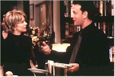
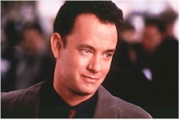

"Hanks is back, and Ryan's got him!" is probably how the ads would've read if this movie had come out during the post-war years of the 1940s. Tom Hanks would probably have just been demobilized after serving overseas; Ryan would've worked at the Hollywood Canteen and entertained the troops. If you'd asked them both, then, what the Internet was, they would probably have thought it was some sort of gangland activity out of Chicago; "AOL" could have been mistaken for a term denoting someone who'd dodged military duty.

But this is the Nineties, when you no longer have to worry about Stalin, the nuclear bomb, or whether you have the right Book of the Month Club selection set out on the coffee table for when company comes. Today, people go to bookstores to drink espressos. Today, you can communicate with people whom you haven't actually seen or talked to in the flesh for years. You can plug in your laptop computer -- the size and shape of a weekly issue of "Collier's" or the "Saturday Evening Post", fifty years ago -- and instantly slingshot around to find out what's going on, at that moment, in London, Paris, Warsaw, Sarajevo, Madrid, Milan, Athens, Sydney, Singapore, or Tokyo. The world has become smaller than it ever was, with people situated in little rooms, bent over small, glowing screens. Fifty years ago, if you had to go to Europe, you took a boat; it may have taken longer than a few minutes, or seconds, of download time, but you had more human contact.The electronic community in You've Got Mail -- which, mercifully, is not a feature-length commercial for America Online, although a major bankcard is flashed in our faces A LOT during one scene -- includes Kathleen (Meg Ryan) and Joe (Tom Hanks), who, using only their screen names, regularly exchange greetings and felicitations through e-mail. They offer observations; they give each other advice. Inevitably, they wonder if they should meet. What would happen? If they meet face-to-face, would it ruin everything? Or, if they retreat to their respective keyboards, would they miss out on something that could turn into a good thing?
Not only have they passed each other, unbeknownst, on the streets of New York, and have already met without knowing that the other is their electronic correspondent, but more. Joe is putting up a huge super-bookstore outlet (insidiously modeled, in the film, after Barnes and Noble) in Kathleen's neighborhood, which is sure to attract business with its combination of discounts and Starbucks coffee (or, as Joe puts it, "cheap books and stimulants"). He is also the son of the owner (seen, fleetingly, in the form of Dabney Coleman) of the super-bookstore chain outlets. Kathleen, on the other hand, runs a small locally-owned store which has been in existence for years, provides one-on-one service, and has taken pains to build up a loyal clientele. Exactly the type of establishment the huge super-bookstore is sure to run right out of business.
So, this is not just a penpal story, but also a David and Goliath tale, the impersonal new threatening to drive out of existence the quaint, personalized, and familiar. This only ups the odds on whether the two lead characters, who have built a relationship of sorts on the Internet unencumbered by "particulars", will like each other in-person. Or, maybe, dare I say it, they shouldn't?

Well, for one thing, Hanks and Ryan happen to be two performers who work enormously well together without giving you the feeling that you're watching the gears go 'round while they are doing so. Hanks, one of our current, and best, motion picture embodiments of innate decency, is effectively cast against type, playing someone who pragmatically conducts business but is not without feelings. Since someone had to be bouncy in this picture, Ryan, trying for a combination of conviviality and pluckiness, comes off as, I felt, striving to be a bit too bouncy, perky, and adorable. We're introduced to what type of character she is going to be in an early scene where she shimmies and bops around her apartment in the morning, readying to go to work and into the world for the day, while wearing loose-fitting p.j.'s. The camera seems to be trying to tell us she's "cute" by fixating on her caboose. Meg Ryan is indeed cute, but she doesn't have to waggle her behind at us to tell us so.Nora Ephron is a director who tries hard -- sometimes too much so, as in her last film, Michael -- to conjure grace and charm from her material. This is a sore point, here, as this picture is an updating of The Shop Around the Corner, the 1940 Ernst Lubitsch film where James Stewart and Margaret Sullivan played shopworkers who meet at work everyday without knowing that they are writing letters to each other. Lubitsch was a director who -- along with such films as Trouble in Paradise, Ninotchka, and Cluny Brown (where Jennifer Jones scandalized the British upper-classes by defiantly announcing that she was a young, eligible woman who was passionate about -- gasp! -- plumbing) -- could create films that had the consistency, and delight, of a well turned-out souffle, with an air of evanescence that could make you feel like you were practically floating while watching the film. This is a rare, rare talent, and it would be unfair to expect Ephron, or anyone, to try and match it. (In fact, some very good directors have tried, and failed miserably.)
Ephron and her sister, Delia, who co-wrote the screenplay, have in many ways cleverly updated the material. While e-mail communications may have a one-step removed feel to them compared to letters that were penned by-hand, the Ephrons have included the use of another electronic Internet application that makes up for that. And the New York settings have the right, pleasant feel to them. Nora Ephron can move a story along smoothly, enable a good line of dialogue to play well, and can bring good performances forth from the performers she's working with. Along with Hanks, this includes Jean Stapleton, who is simply a doll playing a woman who is both Kathleen's friend and keeps books for her store; Steve Zahn, as one of the store's employees, who keeps turning out to not be as befuddled as we expect him to be; and Greg Kinnear, who plays Kathleen's fiance, a journalist for the iconoclastic New York "Observer". (Parker Posey, a usually fine performer, seems utterly keboxed in the role of Joe's girlfriend. She needn't worry, though, since, along with being stuck in a thankless role, there doesn't seem to be much of a role for her to play, here, anyway.)
But Ephron is also a by-the-numbers director: she sits down, sets her marbles and jacks before us on the table, and proceeds to methodically play them out. The picture, as a whole, seems to need something more -- pizazz, or daring, perhaps. Part of the enjoyment in watching the Lubitsch picture (or most Lubitsch pictures) was in seeing how he was going to sustain his initial premise. As the characters drew closer and closer to revealing themselves, there was an increasing sense of anticipation, and an element of doubt would emerge that could cause you to wonder -- even though you know you were watching two movie stars at-work on the screen -- if things just might possibly go against them. And if those expectations were met, how they would -- if at all -- get together before the end.
There's little or no doubt that Tom Hanks and Meg Ryan will get together at the end of this picture. The problem is that it seems to have been decided from the beginning, leaving one only to find out by what path they will do so. The picture feels comfortable, reassuring, prefabricated, cozy. That may be enough for most people. However, we deserve more.